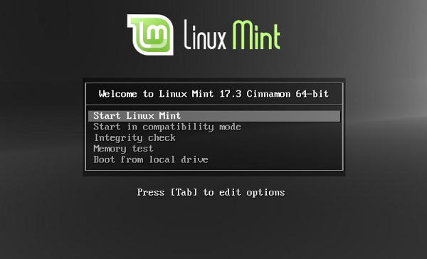

Linux Mint installieren – einfach erklärt

Linux Mint ist eine kostenlose, sichere und benutzerfreundliche Alternative zu Windows. Diese Anleitung zeigt, wie Sie es Schritt für Schritt installieren – ganz ohne Vorkenntnisse.
Vorbereitung
Bevor es losgeht, brauchen Sie Folgendes:
- Einen USB-Stick mit mindestens 8 GB Speicher
- Einen Computer oder Laptop
Wichtig: Sichern Sie vorher alle wichtigen Daten (Fotos, Dokumente) auf einem externen Speicher oder USB-Stick – bei der Installation kann die Festplatte gelöscht werden.
Schritt 1: Linux Mint herunterladen
Laden Sie die aktuelle Version Linux Mint 23.3 Cinnamon herunter. Die Datei hat die Endung .iso – das ist die Installationsdatei, ähnlich wie eine DVD auf dem Computer.
Schritt 2: Bootfähigen USB-Stick erstellen
Jetzt wird die ISO-Datei auf den USB-Stick übertragen, damit der Computer davon starten kann:
- USB-Stick einstecken
- Das kostenlose Programm balenaEtcher herunterladen und öffnen
- Die heruntergeladene ISO-Datei auswählen
- Den USB-Stick auswählen
- Auf „Flash" klicken und warten, bis der Vorgang abgeschlossen ist
Schritt 3: Vom USB-Stick starten
Starten Sie den Computer neu. Direkt beim Einschalten – sobald das erste Bild erscheint – drücken Sie eine der folgenden Tasten:
F12 · F2 · ESC · DEL
Es öffnet sich ein Boot-Menü. Wählen Sie dort den USB-Stick aus. Welche Taste bei Ihrem Gerät funktioniert, kann variieren – probieren Sie notfalls alle durch.
Schritt 4: Linux Mint starten und installieren
Nach dem Start vom USB-Stick erscheint ein Auswahlmenü. Wählen Sie „Start Linux Mint".
Es öffnet sich ein vollständiger Desktop – das sogenannte Live-System. Sie können Linux hier zunächst ausprobieren, ohne etwas zu installieren. Wenn Sie bereit sind, starten Sie die Installation per Doppelklick auf das Symbol „Install Linux Mint".
Gehen Sie dann Schritt für Schritt durch die Einrichtung:
- Sprache auswählen: Deutsch
- Tastatur auswählen: Deutsch
- WLAN verbinden (optional, aber hilfreich)
- Installationsart: „Festplatte löschen und Linux Mint installieren" – das ist die einfachste Variante
- Zeitzone auswählen: Berlin
- Benutzernamen und Passwort festlegen
- Auf „Jetzt installieren" klicken
Schritt 5: Abschluss
Die Installation dauert einige Minuten. Danach werden Sie aufgefordert, den Computer neu zu starten. Entfernen Sie dabei den USB-Stick – das System startet anschließend direkt von der Festplatte.
Wichtige Hinweise
- Während der Installation den Computer nicht ausschalten
- Eine Internetverbindung ist nicht zwingend nötig, aber praktisch
- Bei Problemen einfach von vorne beginnen – nichts kann dabei ernsthaft kaputtgehen
Nach der Installation
Ihr System ist jetzt einsatzbereit! Empfehlenswert nach dem ersten Start:
- Updates einspielen: Im Startmenü nach „Update-Verwaltung" suchen und alle verfügbaren Updates installieren
- Programme installieren: Über den „Software-Manager" finden Sie viele kostenlose Programme – zum Beispiel LibreOffice oder VLC
Sie haben Fragen oder brauchen Unterstützung beim Umstieg? Wir helfen gerne in unseren Sprechstunden oder per E-Mail an hallo@dia-bremen.de.